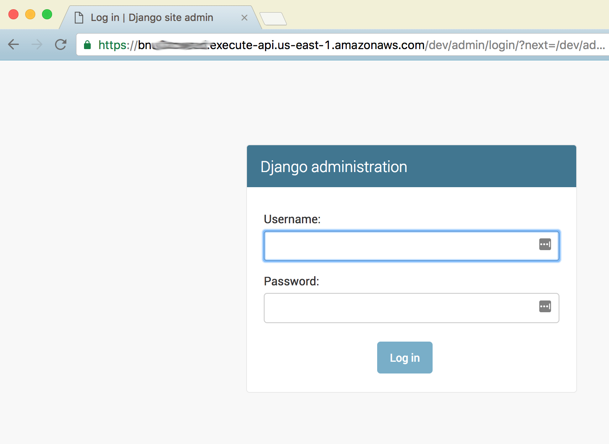

Hosting Static Files¶
Generally if you'd like to use your Django project to present a User Interface (UI) then you'll need to display Images and CSS and serve Javascript files. These are known as static files and to deliver them using Zappa is unlike the traditional method of hosting the static files on a Linux or Windows box.
Static files and Code on a Single Server¶
A very common configuration you may see recommended is to have your Django project deployed on a server with your static files. Then the advice is to have your web server software (apache, nginx, or other) have special mechanisms to directly serve the static files. The idea is to have the fast web server software handle delivering the static images to clients and the comparatively slow Django/python code process the more complex views and page content.
Because Zappa runs in the serverless lambda environment, this approach is not feasible since you cannot configure the web server to handle various url paths differently. Thus another approach must be taken.
Leveraging WSGI app to serve files¶
The situation where one does not have access to the web server software configuration is more common than one may think. Hosting in a shared environment, or on Platform as a Service (PaaS) like OpenShift may prevent full configuration of the web server to effectively serve static files.
There are ways to leverage the WSGI application (Django for us) and instruct it to serve static files. Normally, Django treats URL requests as an opportunity to run python code. And the python code may have complex logic. But there is a model called WhiteNoise. It is an app that will minimize the python code processing to more efficiently serve static files. Thus no external web server software configuration is required. While perhaps not as optimal as having the web server hosting the files, this method has been used in production effectively.
Using external services to serve files¶
Finally, there is an option to use an external service to serve static files. This is the option that is the subject of this walkthrough.
While any external service that serves files over HTTP could work, the focus for us will be to leverage the AWS service of S3 and the Content Delivery Network (CDN) of CloudFront to meet our needs.
The S3 service will contain our files and provide the fundamental HTTP/HTTPS service. This alone will suffice for many recreational projects, but more professional project will want to leverage CloudFront to provide caching, faster delivery, and better protection of assets.
Note that much of this information was pulled from https://www.caktusgroup.com/blog/2014/11/10/Using-Amazon-S3-to-store-your-Django-sites-static-and-media-files/
Using a CDN for the entire project¶
There are also advantages to serving the entire Django project (Lambda functions and S3 Static files) via the CloudFront CDN. This option will not be covered in this Walkthrough.
Setup and Prerequisites¶
Make sure you understand and execute the Core Django Walkthrough first. This Walkthrough builds upon that.
Setup Amazon Account¶
You will need an AWS S3 bucket to host your static files. This should not be the same as your S3 bucket used by zappa to upload your code. The reason is that you will be making some modifications to the S3 bucket to properly use HTTP to serve files.
Create an S3 bucket and name it something like zappa-static. You may name it anything you like but for the purposes of this walkthrough we will use zappa-static. Replace all occurrences of this string with your chosen bucket name.
Configure CORS¶
CORS is an HTTP standard that enables browsers to pull content from different sources on a single web page. Because our Django Lambda views are hosted on a different URL, we must enable the CORS setting on the S3 bucket holding our static assets to allow the files to be pulled.
Go to your S3 bucket properties, and under "Permissions", click on "Add CORS Configuration". Paste this in:
<CORSConfiguration> <CORSRule> <AllowedOrigin>*</AllowedOrigin> <AllowedMethod>GET</AllowedMethod> <MaxAgeSeconds>3000</MaxAgeSeconds> <AllowedHeader>Authorization</AllowedHeader> </CORSRule> </CORSConfiguration>
Configure Django Project¶
Install modules¶
In order to re-use existing modules freely available, we will use the django-s3-storage package to handle the management of files to and from AWS S3. So first you must install it. Don't forget to activate your virtual environment
pip install django-s3-storage
And thus you should take the corresponding package versions reported by pip freeze into the requirements.txt file. At the time of this writing, the additional lines would be:
... django-s3-storage==0.12.4 ...
Add Django-S3-Storage to the INSTALLED_APPS in settings.py¶
Edit your settings.py file to include django-s3-storage. Note it's called 'django_s3_storage' as an app.
INSTALLED_APPS = (
...,
'django_s3_storage',
)
Configure Django-S3-Storage in settings.py¶
Add these lines anywhere in your settings.py. These values instruct django-s3-storage to properly configure a basic setup for leveraging S3.
YOUR_S3_BUCKET = "zappa-static" STATICFILES_STORAGE = "django_s3_storage.storage.StaticS3Storage" AWS_S3_BUCKET_NAME_STATIC = YOUR_S3_BUCKET # These next two lines will serve the static files directly # from the s3 bucket AWS_S3_CUSTOM_DOMAIN = '%s.s3.amazonaws.com' % YOUR_S3_BUCKET STATIC_URL = "https://%s/" % AWS_S3_CUSTOM_DOMAIN # OR...if you create a fancy custom domain for your static files use: #AWS_S3_PUBLIC_URL_STATIC = "https://static.zappaguide.com/"
Push your static files to the cloud¶
The funny thing about zappa is that generally you have a working local environment and a working lambda environment. In theory either location can push the static files to the cloud.
Using your local environment:
python manage.py collectstatic --noinput
Or to instruct your zappa-powered AWS lambda environment to do it for you (don't forget to push your code changes first)
zappa update dev zappa manage dev "collectstatic --noinput"
Test with the admin¶
Once you have pushed your static files to S3, you can visit the admin site for your Django project to test if it worked. Appending /admin/ to your zappa project you can now browse to the admin site and watch the css being loaded just fine.

Next Steps¶
Well great, now you have a working Django site that processes views and can serve static files. But you can't login because there is no database. Continue through the walkthroughs to complete a fully functional website.
Additional HTTP Settings¶
As mentioned above you probably want to ensure a valid CORS policy is in place for anything resembling production.
In addition there are many default HTTP headers that can be served with your static files to ensure proper caching and so forth. The example format in your settings.py file is:
AWS_S3_MAX_AGE_SECONDS_STATIC = "94608000"
See the django-s3-storage for more settings.